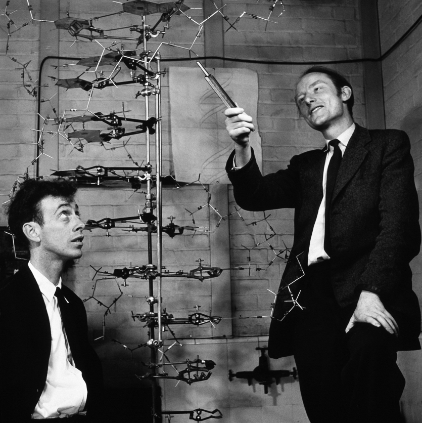

Discovery of Francis Crick...

- The Discovery of the Double Helix, 1951-1953:
- Deciphering the Genetic Code, 1958-1966 :
- Embryology and the Organization of DNA in Higher Organisms, 1966-1976::
- From Molecular Biology to Neurobiology, 1976-2004:
- The discovery in 1953 of the double helix, the twisted-ladder structure of deoxyribonucleic acid (DNA), by James Watson and Francis Crick marked a milestone in the history of science and gave rise to modern molecular biology, which is largely concerned with understanding how genes control the chemical processes within cells. In short order, their discovery yielded ground-breaking insights into the genetic code and protein synthesis. During the 1970s and 1980s, it helped to produce new and powerful scientific techniques, specifically recombinant DNA research, genetic engineering, rapid gene sequencing, and monoclonal antibodies, techniques on which today's multi-billion dollar biotechnology industry is founded. Major current advances in science, namely genetic fingerprinting and modern forensics, the mapping of the human genome, and the promise, yet unfulfilled, of gene therapy, all have their origins in Watson and Crick's inspired work. The double helix has not only reshaped biology, it has become a cultural icon, represented in sculpture, visual art, jewelry, and toys.
Researchers working on DNA in the early 1950s used the term "gene" to mean the smallest unit of genetic information, but they did not know what a gene actually looked like structurally and chemically, or how it was copied, with very few errors, generation after generation. In 1944, Oswald Avery had shown that DNA was the "transforming principle," the carrier of hereditary information, in pneumococcal bacteria. Nevertheless, many scientists continued to believe that DNA had a structure too uniform and simple to store genetic information for making complex living organisms. The genetic material, they reasoned, must consist of proteins, much more diverse and intricate molecules known to perform a multitude of biological functions in the cell.
Crick and Watson recognized, at an early stage in their careers, that gaining a detailed knowledge of the three-dimensional configuration of the gene was the central problem in molecular biology. Without such knowledge, heredity and reproduction could not be understood. They seized on this problem during their very first encounter, in the summer of 1951, and pursued it with single-minded focus over the course of the next eighteen months. This meant taking on the arduous intellectual task of immersing themselves in all the fields of science involved: genetics, biochemistry, chemistry, physical chemistry, and X-ray crystallography. Drawing on the experimental results of others (they conducted no DNA experiments of their own), taking advantage of their complementary scientific backgrounds in physics and X-ray crystallography (Crick) and viral and bacterial genetics (Watson), and relying on their brilliant intuition, persistence, and luck, the two showed that DNA had a structure sufficiently complex and yet elegantly simple enough to be the master molecule of life.
Other researchers had made important but seemingly unconnected findings about the composition of DNA; it fell to Watson and Crick to unify these disparate findings into a coherent theory of genetic transfer. The organic chemist Alexander Todd had determined that the backbone of the DNA molecule contained repeating phosphate and deoxyribose sugar groups. The biochemist Erwin Chargaff had found that while the amount of DNA and of its four types of bases--the purine bases adenine (A) and guanine (G), and the pyrimidine bases cytosine (C) and thymine(T)--varied widely from species to species, A and T always appeared in ratios of one-to-one, as did G and C. Maurice Wilkins and Rosalind Franklin had obtained high-resolution X-ray images of DNA fibers that suggested a helical, corkscrew-like shape. Linus Pauling, then the world's leading physical chemist, had recently discovered the single-stranded alpha helix, the structure found in many proteins, prompting biologists to think of helical forms. Moreover, he had pioneered the method of model building in chemistry by which Watson and Crick were to uncover the structure of DNA. Indeed, Crick and Watson feared that they would be upstaged by Pauling, who proposed his own model of DNA in February 1953, although his three-stranded helical structure quickly proved erroneous
Top
- Before the genetic code could be deciphered, before scientists could understand the process by which deoxyribonucleic acid (DNA) directed the synthesis of proteins, they had to resolve a final mystery: as Francis Crick and other researchers insisted, there must be a messenger to transmit genetic information from the cell nucleus to the cytoplasm, a messenger that was almost certainly made of ribonucleic acid (RNA). But what was its exact nature? Scientists had found notable amounts of RNA at the ribosome, the site of protein synthesis in the cytoplasm, and had assumed that this RNA was the postulated messenger. Each ribosome, according to this assumption, synthesized just one protein.
However, the assumption that ribosomal RNA (rRNA) was the messenger conflicted with other findings, namely that the main sections of rRNA occurred in only two lengths, whereas the polypeptide chains for which this RNA supposedly coded differed greatly in length; and secondly, that the relative amounts of the bases in rRNA were fairly constant, whereas their relative amounts in DNA varied widely from species to species. (The sequence of the bases in rRNA, as opposed to the relative amounts of its bases, would not be known for several more years.) Moreover, Arthur Pardee, François Jacob, and Jacques Monod in their famous "PaJaMo-experiment" had produced evidence that protein synthesis commenced soon after the introduction of a gene into a cell and that it proceeded at a fast, steady rate. By contrast, the theory that ribosomal RNA was the messenger predicted that protein synthesis would start up gradually, as the newly-introduced gene first had to produce the ribosomes at which protein synthesis was to occur.
If ribosomal RNA could not be the messenger, then what was? The question was resolved during a decisive meeting at King's College, Cambridge, on Good Friday, 1960, between Jacob, Sydney Brenner, Crick, and a handful of other researchers. A few years earlier, in 1956, two scientists working with a virus that infected a bacterium found in the bacterium small amounts of a form of ribonucleic acid (RNA) that had the same base composition (the same proportion in the amount of bases) as the DNA of the virus. Their finding and its significance had remained unexplained. During the meeting, Brenner had the sudden insight that this form of RNA must be the messenger because it replicated the base composition of the virus, not of the infected bacterium or its ribosomes, where virus-directed synthesis of proteins was unfolding. Messenger RNA (mRNA) was found in such small amounts that it had previously eluded detection because it was needed only for short periods of time during protein synthesis. It then degraded, to be used again in making a copy of another stretch of DNA. Brenner and the others concluded that the ribosome was just an inert reading head that could synthesize any type of protein while it traveled along the messenger RNA, reading off the bases in sequence.
Top
- This is an historic occasion," declared Francis Crick on June 2, 1966, in his opening remarks to the annual conference of molecular biologists at Cold Spring Harbor Laboratory on Long Island. "There have been many meetings," he explained, "about the genetic code during the past ten or twelve years but this is the first important one to be held since the code became known." Major questions about the genetic code remained to be answered: scientists had not yet determined the base sequence of any gene, nor had they looked closely at the site of protein synthesis, the ribosome, or at the important role of enzymes in DNA replication, repair, and control. Nonetheless, with the identification of the codons for all twenty amino acids, most of the basic concepts of molecular biology had been affirmed and its classical era, as Crick would later call it, had reached its apogee. Due in significant measure to Crick's work, molecular biology had established an intellectual dominance similar to that of theoretical physics during the first half of the twentieth century.
Crick remained as busy as ever, involved in several lines of research and much in demand as a speaker, commentator, and sounding board for scientists throughout the world. Indeed, for various periods during the 1960s and early 1970s, he became so burdened with work that he turned down all invitations to travel and lecture. He sometimes used a pre-printed postcard, reproduced in this exhibit, on which he checked off one of seventeen kinds of solicitation (to lecture, heal a disease, accept an honorary degree) that he routinely declined because they infringed on his time to think.
Crick's final contribution to the understanding of how deoxyribonucleic acid (DNA) controlled protein synthesis, made also in 1966, was his "wobble" hypothesis. This was a proposition concerning how a triplet of bases on a transfer ribonucleic acid (tRNA), the anticodon, recognized and bound to the codon on the messenger RNA, the complementary triplet that coded for the respective tRNA and the amino acid it carried during protein synthesis. Crick suggested that while the first two bases of the codon and of the anticodon formed standard complementary base pairs according to the pairing rule propounded by him and Watson in their original DNA model, there might be some degree of variance, or wobble, in the pairing of the third bases, allowing, for example, a pairing between uracil (which takes the place of thymine in RNA) and adenine as well as between uracil and guanine. Such variance would help explain why the genetic code was degenerate, that is, why almost all amino acids are specified by more than one codon.
From 1966 on, Crick's main scientific concern was to understand how genes controlled the processes of cell division, cell differentiation, and organ growth, that is, to merge genetics and embryology or, as it is generally called today, developmental biology. Gene replication, action, and control had been studied nearly exclusively in microorganisms such as molds, bacteria, and bacterial viruses. Very little was known about the organization of DNA on chromosomes or about the action of genes in more complex organisms. Experimental studies of how the genetic instructions in the fertilized egg are transcribed in the process of cell division and cell specialization, and how these instructions interact with environmental factors to form the growing organism, promised not only to enhance scientists' understanding of the basic processes of life, but to reveal the molecular pathways of human scourges like cancer, neurological diseases, and organ failure.
During the late 1960s and early 1970s, Crick drew on Sydney Brenner's innovative experimental work on the life cycle of the nematode Caenorhabditus elegans, a self-fertilizing earth worm made up of about a thousand cells, to develop theories about the organization of chromosomes and about genetic control of an organism's development. As a result of his preoccupation with chromosome structure Crick became interested in the histones, simple proteins that are associated with DNA in the chromosomes of higher organisms, and that Crick thought played an important role in gene replication. Histones and DNA are components of chromatin, the name given to the chromosomal material when extracted from the cell nucleus. Discovering the structure of chromatin and of nucleosomes, assemblies of histones and short stretches of chromosomal DNA that appear like beads on a string under the electron microscope, was the focus of Crick's colleagues at the Laboratory of Molecular Biology in Cambridge, Aaron Klug and Roger Kornberg. Crick followed their work closely, and in discussion with them brought to bear his unmatched ability to perceive the central problem at hand through layers of conflicting experimental data, as can be seen in his correspondence with Klug from the 1970s.
Top
- After making path-breaking discoveries in molecular biology over the course of three decades, Crick, at the age of sixty, embarked on a second scientific career, at a new institution, in a new country, and in a new discipline. In 1976, he took a sabbatical year--a sabbatical, contemporary news accounts suggested, from high British taxes as well as from low British pay--at the Salk Institute, a privately-funded biomedical research facility in La Jolla, California. Crick had been affiliated with the Salk Institute for the first twelve years after its construction in 1962 as a non-resident fellow, a member of the visiting committee that advised the institute on appointments and the direction of its research. In 1977, the Kieckhefer foundation endowed a chair for him at the institute, and he accepted a permanent appointment there that he held for the rest of his life.
For Crick, his move to the Salk Institute was a unique opportunity to take up the second of the two scientific fields for which he had discovered a passion thirty years earlier, when he applied the "gossip test" to his career decision: neurobiology. First, though, he had to extricate himself from his first chosen field, molecular biology. That transition took several years because fellow scientists continued to rely on his unrivalled knowledge of molecular biology, and because the rapid progress in DNA research during the second half of the 1970s kept him engaged.
Meanwhile, Crick was drawn by his longtime friend Leslie Orgel into yet another field, the study of the origins of life and of evolution, a field to which Orgel had devoted his career. It was an area of science that, like molecular biology and neurobiology, attracted him because he found there a similar need for a unifying theory. No less did he find there cause to argue against creationist or, as he called them, vitalist views, the belief that life was created and sustained by an animating, metaphysical force whose existence could not be proven. In a book entitled Life Itself, published in 1981, Crick posited instead that life on earth originated from microorganisms deliberately seeded by a higher civilization via unmanned spaceships. Crick called his speculative theory "directed panspermia," a reference to the idea of "panspermia" advanced in 1907 by Svante Aarhenius, who suggested that life on earth had been seeded by microorganisms drifting through space. Crick's theory proceeded from the fact that the genetic code is uniform across almost all species and thus likely evolved from a small original or intermediate population, and from the second fact that the earth is less than half the age of the universe, allowing time for life to evolve elsewhere first before it evolved here.
If the book was an expression of Crick's self-confidence (which other scientist would dare invoke alien space ships in explaining natural phenomena?), it also had a serious purpose as a meditation on the nature of scientific theory for a lay audience, rather than as a detailed study of evolution. The book called for a convergence of sciences--cosmology and astronomy, biology and chemistry--to solve the mystery of the origin of life on earth, just as collaborators from different scientific disciplines had uncovered the secrets of the gene.
Leaving behind his long-standing, firmly-established interests, as well as his newly-found, speculative ones, Crick shifted his focus to neurobiology by the early 1980s. He was skeptical of the behaviorist and functionalist approaches to the study of the human brain which were predominant among psychologists. These researchers believed that human behavior should be studied by itself without taking into account the neurological processes that might govern it. In essence, behaviorists treated the brain as a "black box" whose inner workings were irrelevant to their studies.
Cognitive and computational neuroscientists did construct mathematical and computer models of brain functions, but to Crick they appeared no more interested than psychologists in the biology of the brain, or in determining how closely their models approximated nature. He wanted to look inside the human brain, to study the networks, connections, and firing patterns of neurons, which in his view gave rise to mental activity and consciousness. He insisted that only the study of brain functions at the molecular level would uncover the neural correlates of consciousness, that is, the smallest array of neurons associated with a particular perception. Within a generation, Crick predicted, psychology and neuroscience would undergo a molecular revolution similar to the one biology had undergone in the 1950s.
Top